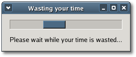

| Xfce
Foundation Classes |
|||
| « Main Page | Index | |||
Using Glade with XFCTable of Contents
Creating a good graphical user interface for a GTK application has never been easy, but it's an important goal. A good user interface means a more functional application, and if your application is more functional its users will be more productive. To create a good user interface you first have to plan its design. Then you have to write the source code to implement it. Often this involves for a few mock ups to see what the user interface will look like. Then finally you have to write the source code for the application itself. This process can take some time so anything that will help to speed things up is great. And that's exactly what Glade is - it's great! Glade is a graphical user interface designer for creating GTK+ and GNOME applications visually. While Glade supports the generation of source code it's no longer recommended. Instead you should dynamically create your application's user interface from the XML description file (.glade) that Glade creates. In C you do this using the libglade API. One of the advantages of using Glade is that it separates user interface design from application development. This separation allows you to change or update the user interface without having to recompile the application. Designing your interface with GladeWhen designing an application you can choose to create part or all of its interface with Glade. If you look at the example programs in the <tests/glade> subdirectory you will see that the entire interface for each is designed with Glade. Depending on your application's needs you could create the main window manually and any pop-up dialogs and secondary windows with Glade. One reason you might want to do this is to override one or more of your main window's virtual signal handlers instead of connecting to its proxy signal functions. Virtual signal handlers can override default signal behavior, proxy signal functions cannot.The easiest way to learn how to use Glade is to just start using it. To launch glade, run the command 'glade-2'. When you do three windows will appear: the main window, the widget palette, and the property editor. When you try to create a new project Glade will ask you whether you want to make a GTK+ project or a GNOME project. Do not choose the GNOME option because XFC does not support the GNOME libraries. When designing an interface with Glade you need to apply the same principles you would use when designing an interface manually. For example, placing your widgets inside a packing widget will facilitate dynamic resizing. When you save your glade project the only entry field you need worry about under the 'General' tab is the project directory name. When you change this directory name all other entry fields are automatically updated to reflect the change, including the glade file name. The property editor displays five tabbed windows. The first four are labeled Widgets, Packing, Common and Signals. The Widget tab groups together widget specific properties. If a widget is placed inside a packing widget, the Packing tab will display the widget's packing properties. The Common tab groups together those properties common to all widgets. The last tab which is labeled with a wheelchair icon displays a widget's accessibility properties. The Signals tab lists all the signals emitted by a widget and provides an entry field where the name of the signal handler to connect to can be entered. These are for C signal handlers and should not used in a XFC application. XFC provides proxy signal functions and libsigc++ slots which should be used instead, just as you would if you were creating the user interface manually. So just ignore the Signal tab. Before moving on, now would be a good time to have a look a few Glade tutorials if you have not use Glade before. IBM developer works has a good tutorial that takes you step-by-step through creating a glade interface and application. Extensive online documentation for Glade-2 can be found here and GNOME provides a good development guide which covers the use of Glade and libglade. The Glade::Xml objectEssentially libXFCglade is a C++ binding for only one libglade object: GladeXML. The wrapper class Glade::Xml implements most of the GladeXML API but not the signal connection functions. These functions are not easily wrapped in C++, and they're not needed anyway because XFC implements its own libsigc++ signal connection functions.The Glade::Xml object represents the instantiation of a glade XML interface description. When an instance Glade::Xml is created it reads the specified XML file and creates the described user interface. Glade::Xml also provides convenient methods for accessing the widgets in the user interface. Widgets can only be accessed by the name you assigned to them in the XML description. Either of the following methods can be called to create a Glade::Xml object: static Pointer<Xml> create(const
std::string& filename, const String& root = 0, const
String& domain = 0);The first method creates a new Xml object from the file named 'filename'. The second method creates a new Xml object from a memory 'buffer' that contains a XML interface description. The 'size' argument is the size of the memory buffer, 'root' is the root widget to start building the interface from, or null for the entire interface, and 'domain' is the translation domain, or null to use the default domain. Once you have created a Xml object you can then call one of its get_widget() methods to retrieve a pointer to a standard widget: Gtk::Widget* get_widget(const
String& name) const;The first method returns a generic Gtk::Widget pointer. The second method is a template function that on return sets 'widget' to point to a widget of WidgetType, where WidgetType is one of the standard XFC widgets. The return value is true if successful. The 'name' argument is the name given to the widget in the XML interface description. Alternatively, you can call get_widget_derived() to retrieve a pointer to a user defined widget that derives from one of the standard XFC widgets: template<typename DerivedType>The arguments and return value for this method are the same as for get_widget(), except that on return 'widget' is set to point to a widget of DerivedType, where DerivedType is a user defined type that derives from one of the standard XFC widgets. Because this method creates an instance of the specified DerivedType its class declaration must declare a constructor with the following syntax: DerivedType(CObjectType *object, const
Glade::Xml& xml);CObjectType is a typedef for a XFC widget's corresponding GTK widget type. Every XFC widget class defines a CObjectType. For a Gtk::Window it's GtkWindow and for a Gtk::Button it's GtkButton. The 'xml' argument is a reference to the Glade::Xml object you created. It's passed to the DerivedType constructor so it can be used to retrieve pointers to the other widgets described in the XML interface description. Loading a .glade file in your main() functionAfter designing you application's user interface and saving it, Glade creates a .glade file in your project directory using the file name entered into the Project Options "Project File" entry field. By default, the file name used is the name of the project directory but this can be changed. If you create your main application window with Glade, the .glade file must be loaded in the main() function. If you only create secondary windows or popup dialogs with Glade you can load the .glade file elsewhere. A good place would be in your main window constructor.To use Glade::Xml in your application add the following include statement: #include <xfc/glade/xml.hh>Then load your application's .glade file in your main() function, like this: int You should be familiar with the 'using' declaration by now. Here it opens the Xfc::Main namespace so that namespace types don't have to be prefixed with the Main:: specifier. In the next line the call to init() initializes the GTK+ libraries. The next line creates an instance of a Glade::Xml object. The create() method is a static function that returns a null pointer if an error occurs, in which case main() returns 1 and exits. The file name "name.glade" is name of the glade XML file created when you first saved your glade interface. Pointer<Glade::Xml> xml =
Glade::Xml::create("name.glade"); return 1;In the next three lines a MainWindow pointer is declared. This pointer is then passed to get_widget_derived() to retrieve a pointer to a newly created instance of MainWindow. If get_widget_derived() is successful, the window pointer is passed to Main::run() to run the application and display the main window. MainWindow *window; run(window);Note calling: run(window);is equivalent to calling: window->signal_destroy().connect(sigc::ptr_fun(&Xfc::Main::quit));ExampleLet's have a look a simple example that will show you how easy it is to give a XFC application a Glade interface. Example-2 in the <tests/glade/example-2> subdirectory creates a window that displays two widgets: a progress bar in activity mode and a label. A timeout function is used to calculate how much time you wasted looking at the progress bar. When the program terminates the time you wasted is printed to stdout. The window looks like this:
The XML file generated by Glade for this window layout is <example-2.glade>: <?xml version="1.0"
standalone="no"?> <!--*- mode: xml -*-->Note the string identifier "WasteTimeWindow" given to the GtkWindow near the top. This is the identifier that is used to retrieve a pointer to the corresponding Gtk::Window, which is our main window. The header file for Example-2 is <example-2.hh>: #include <xfc/main.hh>WasteTimeWindow is a widget that derives from Gtk::Window so it must define a constructor with the required syntax: WasteTimeWindow(CObjectType *object,
const Glade::Xml& xml);The source file for Example-2 is <example-2.cc>: #include "example-2.hh"First, the WasteTimeWindow constructor connects the on_delete_event() signal handler to the window's "delete_event" signal. We use the proxy signal function signal_delete_event() to do this. Remember, you can't use widget signal classes with glade widgets, only with native XFC widgets, so we can't override the inherited virtual on_delete_event() handler. When the user closes the WasteTimeWindow, on_delete_event() calculates the time wasted and prints this information to stdout using the C++ std::cout operator. Next, the constructor retrieves a pointer to the progress bar widget identified by the string "TheProgressStuffies" and initiates its activity mode by calling Gtk::ProgressBar::pulse(). Note that because the progress bar is a standard XFC widget and not a derived widget, we call get_widget() not get_widget_derived(). There are three other Glade examples in the <tests/glade> subdirectory: example-1, example-3 and example-4. All these examples are translations of the examples that come the Developing with Gnome guide. Each example is a little more complex than the last so you should have a look at all three examples and work through the source code.
|